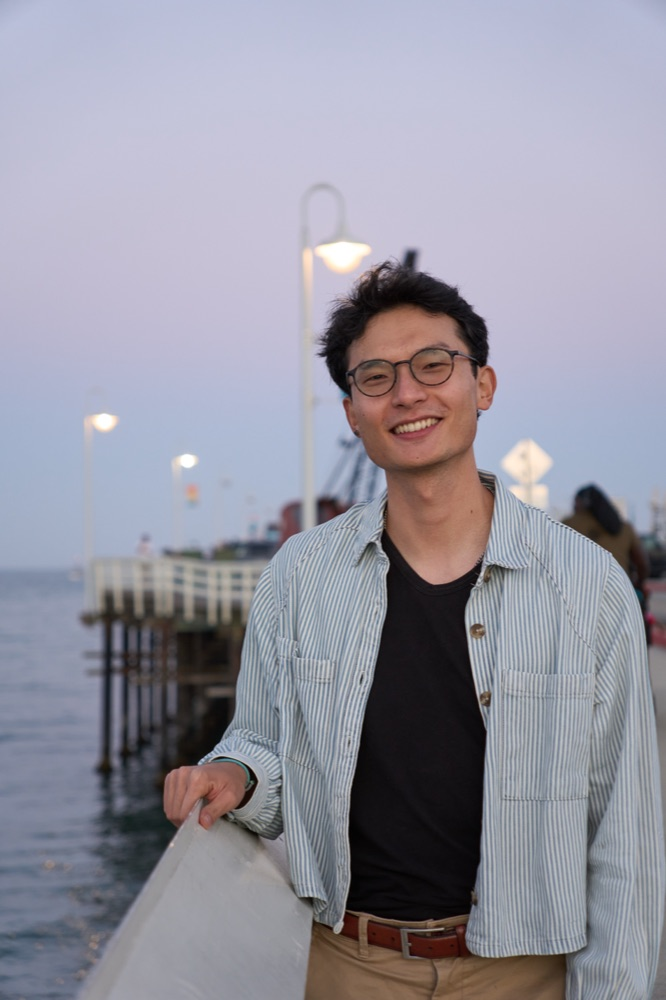

I'm Richard Wang, a computational linguist and speech scientist. I evaluate ASR systems, build tools for annotating casual and dialectal speech, and measure the variation that standard models treat as noise, in Beijing Mandarin and in low-resource languages like the Munda family.

Doctor of Philosophy (Ph.D.) in Linguistics
Specialization: Speech Technology & Computation
M.A. in Linguistics | B.A. in Linguistics, Magna Cum Laude
Specialization in Computation · Minor in Japanese · UCLA Department Scholar
Selected initiatives across speech recognition benchmarking, acoustic modeling, and quantitative data pipelines.
Conducting an independent evaluation of Meta's Omnilingual ASR model across five severely under-resourced Munda languages, testing both training languages and zero-shot generalization. Identified systematic failure modes including decoder looping, script divergence, and mislabeled training data. Annotated and quality-checked 90+ hours of speech corpus data, standardizing QA protocols across a distributed team.
Built end-to-end acoustic analysis pipelines in Python and R for feature extraction, signal processing, and automated quality control, enabling analysis at 10x the scale of manual methods. Applied mixed-effects regression, bootstrapping, and ML classification across 20,000+ model iterations over 8 interacting variables to model speech variation. Showed that segment duration does not predict retroflex lenition in Beijing Mandarin, contrary to the standard duration-based account.
Designed and led an 8-week computational data curriculum, delivering 80+ hours of structured instruction in Python/R, hypothesis testing, and quantitative visualization. Supervised 3 junior researchers in deploying Praat automation scripts and running mixed-effects regression models on 2,500+ speech tokens.
Engineered Python algorithms to model distributional and phonotactic patterns across 10,000+ dictionary entries. Built reproducible analysis pipelines using R and regular expressions for large-scale lexical datasets while coordinating experimental protocols for 130+ cognitive study participants.
Code from my research and evaluation work. Recordings and participant data are not included; each repo says what it is for and where it falls short.
Finds every word in long recordings of a read word list by scoring segments against the known list, repairs boundaries with the Montreal Forced Aligner, and measures how alignment accuracy drops on lenited syllables. Built for annotating dissertation-scale data without hand-aligning every file.
View on GitHubAn acoustic classifier for hand-coded lenition of retroflex syllables: trained on one speaker, tested on another, AUC 0.82 on two annotated speakers (preliminary). A corpus-scale version trained on AISHELL-3 and THCHS-30 is in progress.
View on GitHubWER and CER that keep the alignment, so you can see which words or characters were substituted, dropped or inserted, plus pooled corpus rates and the most common substitutions. Written for evaluating ASR on low-resource languages, where one error rate hides several failure types.
View on GitHubSuggests tone and boundary labels from pitch tracks to speed up ToBI-style annotation of Mandarin, with inter-annotator agreement reporting so the labels can be trusted for downstream use.
More on GitHub.
13 quarters as a teaching assistant and instructor at UC Santa Cruz, mostly phonetics and phonology, plus Introduction to Linguistics and Invented Languages.
Selected competitive funding and institutional research fellowships.
The Humanities Institute, UC Santa Cruz
The Humanities Institute, UC Santa Cruz
UC Santa Cruz
The Humanities Institute, UC Santa Cruz
Linguistic Society of America
Concurrent M.A./B.A. distinction
Departmental stewardship, conference management, and equity initiatives.
UCSC Linguistics Department
Managed logistics, budgets, and cross-team coordination for 5+ departmental events serving 50+ attendees.
UCSC Linguistics Department
Spearheaded an editorial team of 10+ contributors, curating and publishing monthly research editions on schedule.
UCSC Linguistics Department
Partnered with departmental leadership to formulate and execute initiatives supporting international scholar accessibility and inclusion.